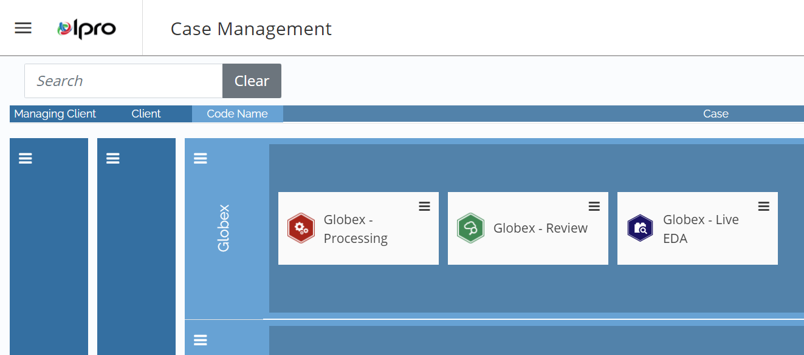
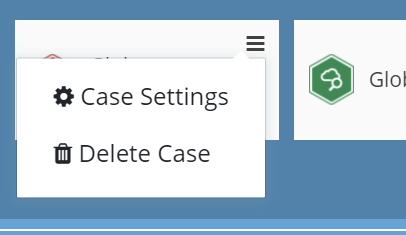

You can modify various case settings in
Open Case Management
and locate the case whose settings you would like to modify. This may be a Processing, Review, or

Click the icon in the corner of the case.
In the menu that appears, select Case Settings.

The type of case you select determines the settings available for you to modify.
Processing cases - You can view and modify case details, as well as ingestion, filtering, and imaging settings for a Processing case. To view information about these settings, see
Review cases - You can view and modify indexes, redactions, tag palettes, and coding forms for a Review case, along with several other components. See
Related Topics